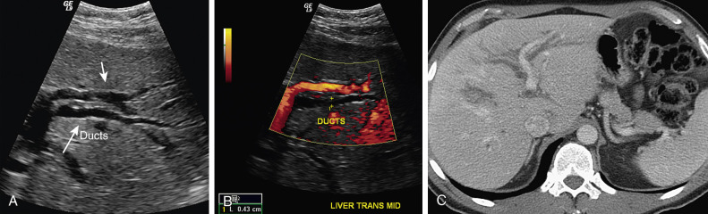

Bile Duct Ultrasound · jamesxxx1997
Practical US guide to intrahepatic (IHD) and extrahepatic (EHD/CBD) bile ducts — measurement references, dilatation signs, and scanning technique. Distilled from imaging notes.
Intrahepatic Duct (IHD)
Measurement
- Measure at the portal bifurcation — max anterior-posterior diameter, inner wall to inner wall.
- ACR–AIUM–SPR–SRU practice parameter: standard measurement point is the common hepatic duct (CHD) at the porta hepatis.
- Do not compare IHD to adjacent portal vein diameter to judge size (not validated by literature).
IHD position relative to Portal Vein — teaching mnemonic vs reality
Mnemonic (screen-based): Left IHD lies inferior to left PV; Right IHD lies superior to right PV.
This is a useful scan-room memory aid for a specific probe orientation — not a fixed anatomical rule.
Anatomically stable relationship: IHD branches run parallel to PV branches and are generally located on the ventral / anterior side of the PV — regardless of screen up/down, which changes with probe angulation and patient position.
US Signs of IHD Dilatation
| Sign |
Prevalence |
Description |
| Double-barrel shotgun sign |
96% |
Dilated bile duct runs parallel alongside portal vein, forming a double-lumen / twin-tube appearance. Most reliable sign of IHD dilatation. |
| Stellate confluence |
66% |
At major duct junctions, multiple dilated ducts converge in a spoke-of-wheel / star-burst pattern. Highly specific but less sensitive. |
| Irregular wall |
62% |
Wall irregularity along dilated ducts (see image below). |
| Peripheral duct dilatation |
28% |
Ducts extend to within 3 cm of liver edge. (Normal PV branches rarely reach the liver periphery.) |
| IHD > 40% of adjacent PV |
— |
Rule-of-thumb threshold when IHD diameter exceeds 40% of the adjacent PV branch diameter. |

Irregular wall of dilated intrahepatic bile duct
Extrahepatic Duct (EHD / CBD)
Anatomy & Orientation
- CBD runs parallel to the IVC in the same sagittal plane for most of its course.
- Just before entering the duodenum it curves rightward and slightly anteriorly.
- Clinically: think of the CBD as a vertical tube sitting just anterior to the IVC until it dips into the pancreatic head.
Finding CBD — Transverse Approach
1
Identify the pancreatic head on transverse scan.
2
Fine-tune until a single slice shows gallbladder + duodenum + pancreas head + IVC simultaneously — the CBD cross-section is always within this view.
3
Slide the probe cephalad (toward liver). Pancreas fades away; CBD cross-section persists as you trace it up to the porta hepatis.
Finding CBD — Longitudinal Approach
1
Start same as transverse — confirm CBD position on transverse first.
2
Rotate probe in-place to longitudinal — the CBD cross-section unfolds into a long-axis view.
3
Alternative: Place probe directly over the IVC sagittal plane — you will see pancreatic head, CBD long axis, and a portal vein cross-section simultaneously.
Measurement
- Avoid cystic duct junction: The cystic duct inserts into the CBD and locally widens it. Stay at least 10 mm away from the junction on both sides to avoid overestimation.
- Report the maximum AP diameter (widest diameter along the longitudinal scan), measured inner wall to inner wall.
- Primary reporting site: CBD near the porta hepatis.
- Also evaluate the distal CBD at the pancreatic head — do not skip this segment.
ACR–AIUM–SPR–SRU standard measurement: common hepatic duct at the porta hepatis (anteroposterior inner-wall-to-inner-wall diameter).